← 返回阅读库 · 原论文目录
论文讲解阅读文档 · 内容生成 · v019
Taming Transformers for High-Resolution Image Synthesis[2012.09841]
视频时长 00:06:13；讲解文字 3,028 字符；提取讲解画面 27 张。按视频原顺序阅读，每段文字保留时间戳。
文字来自整段视频的自动语音转写，按自然停顿分段，并与 PPT / 论文页面 / 演示画面对齐。未将讲解压缩为摘要；术语、数字和口述公式请结合画面及原论文核对。 阅读稿已校正规范部分明确术语误识别；原始逐字稿和每处修改记录另行保留。
讲解画面为源视频截图（640×360），不是可编辑 PPT 文件。全片按每秒 2 帧扫描内容变化，逐步展开页保留；连续动画保留代表画面。清晰度受源视频限制。
下载完整资料包 · 含离线 HTML、PDF、Word、全部 PPT 画面和字幕。
原论文与材料
Taming Transformers for High-Resolution Image Synthesis · 下载完整 PDF（52 页）
按时间阅读
00:00:00–00:00:11 · 画面 001
 00:00:00–00:00:11 · 画面 001
00:00:00–00:00:11 · 画面 001大家好,今天我们来快速说一篇论文 Taming Transformers for High-Resolution Image Synthesis 这篇论文是很经典的 VQGAN 在介绍这篇论文之前,首先我们对 VQ-VAE 做一个快速的回顾这个我们之前有视频专门介绍过,感兴趣的朋友可以先去看一下
00:00:11–00:00:46 · 画面 002
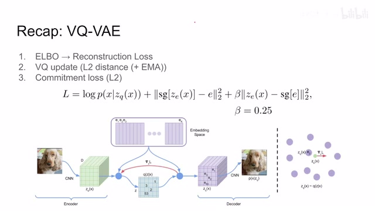
00:00:11–00:00:46 · 画面 002那么 VQ-VAE 的核心呢就是它的这个 latent space 不再是连续的这个 Gaussian distribution 而是呢这个一个离散的这个 codebook 那这样子你的这个 encoder 出来找出了一个这个 representation 之后呢去在这个 codebook 也就是这个 embedding space 中找到离我们的这个 representation 最近的这么一个词条就是这样一个 e 它呢作为我们 decoder 输入这样子的一个过程
00:00:46–00:00:47 · 画面 003
00:00:46–00:00:47 · 画面 003所以你看到它跟这个 vae 一样虽然都是有这个 elbo 但是因为它中间不是这个 gaussian distribution 所以它使用这个 loss 更新的机制呢就相应的有变化那么当然本质上呢我们都是要训练这个 encoder 还有 decoder 那对于这个 VQ-VAE 来讲它有一个特殊的地方呢就是它这个 embedding space 它这个 codebook 就是这个东西它呢是要与时俱进跟着这个 encoder 来一起走的所以呢随着训练的继续呢这个东西呢也要跟着更新
00:00:47–00:01:07 · 画面 004
00:00:47–00:01:07 · 画面 00400:01:07–00:01:08 · 画面 005
00:01:07–00:01:08 · 画面 00500:01:08–00:01:15 · 画面 006
00:01:08–00:01:15 · 画面 00600:01:15–00:01:16 · 画面 007
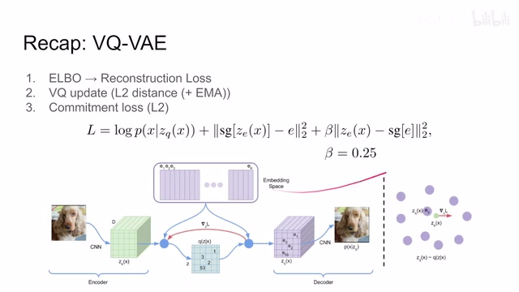
00:01:15–00:01:16 · 画面 007那这个呢就是对这个 codebook 它这个更新也就是这个 commitment loss 然后呢我们就可以来到本文的方法了本文的方法呢是一个经典的这个两步的方法那首先呢用一个 vae 去学一个好的这个码表 codebook 然后呢我们在这个 codebook 在这个 latent space 在这个 embedding space 里面开始做文章那这里呢做的一个贡献呢就是用这个 transformer 去生成一串这个 latent code 那具体来看在第一阶段呢先用了一个 vqvae
00:01:16–00:01:18 · 画面 008
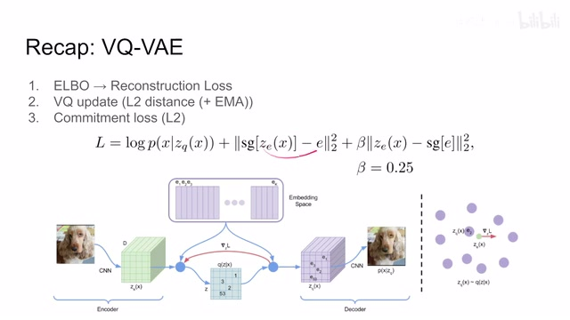
00:01:16–00:01:18 · 画面 00800:01:18–00:01:20 · 画面 009
00:01:18–00:01:20 · 画面 00900:01:20–00:01:45 · 画面 010
00:01:20–00:01:45 · 画面 010做这个 encode 还有 decode 当然这不算完作者在后面呢还加了一个这个 patch based 这个 discriminator 为什么叫 patch based 呢就是因为我们的这个图像它可能很大嘛所以呢每次呢我只检查一个 patch 就是看这个 patch 它的质量怎么样这个 discriminator 所以呢在第一个阶段呢作者叫他这个 vqgan 因为多加一个这个 discriminator 嘛那么这样子呢就是让我们能够学到一个好的这个 codebook 然后这个 encoder 和这个 decoder
00:01:45–00:01:46 · 画面 011
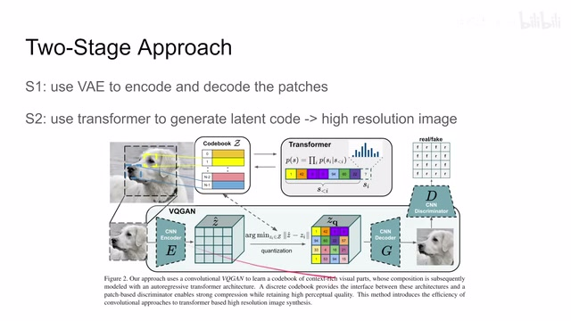
00:01:45–00:01:46 · 画面 01100:01:46–00:02:17 · 画面 012
00:01:46–00:02:17 · 画面 012都可以得到一个训练那这个呢是第一个过程那继续来看呢这个 reconstruction loss 对吧跟这个之前的这个 VQ-VAE 是一样的一个是训练这个码表一个是训练这个 encoder 啊这三个部分这个 loss 然后呢在 VQ-VAE 基础上增加了这个 discriminator 这个 patch base 的 discriminator 组成了这么一个 GAN 那么他呢就是对吧这个 VQ-VAE 这是一个 generator loss
00:02:17–00:02:28 · 画面 013
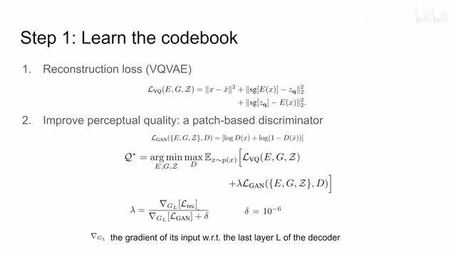
00:02:17–00:02:28 · 画面 01300:02:28–00:02:29 · 画面 014
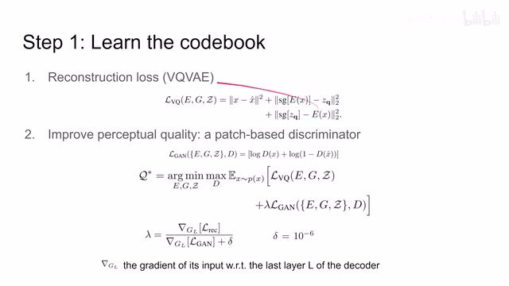
00:02:28–00:02:29 · 画面 01400:02:29–00:02:40 · 画面 015
00:02:29–00:02:40 · 画面 01500:02:40–00:02:42 · 画面 016
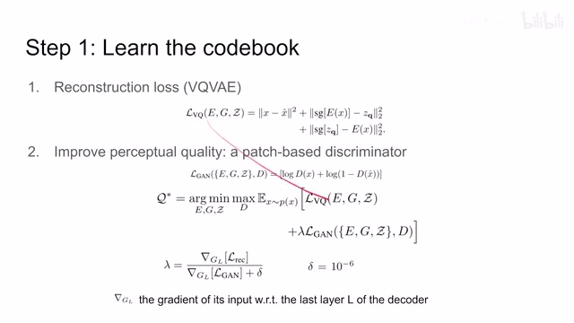
00:02:40–00:02:42 · 画面 01600:02:42–00:02:46 · 画面 017
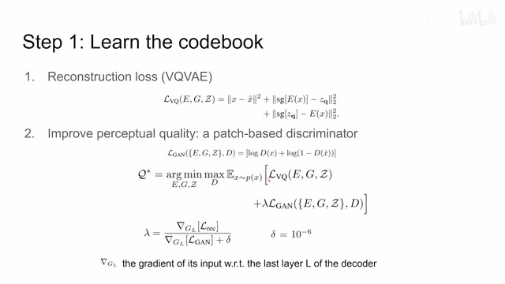
00:02:42–00:02:46 · 画面 017然后呢 gan 的 loss 那么这里呢还有一个有意思的地方就是看这里作者用了这个 lambda 去平衡 generator loss 和 discriminator loss 这个符号呢就是这个 discriminator 最后一层的这个 gradient 它的这个平均值这个呢是简单的一个防除 0 嘛那么这个呢就是这个 VQGAN 的这个设计那通过 VQGAN 呢我们就能够学到一个好的这个码表那么有了这个好的码表之后呢我们第二步呢就开始去造吧造我们想要的这个图像嘛
00:02:46–00:02:47 · 画面 018
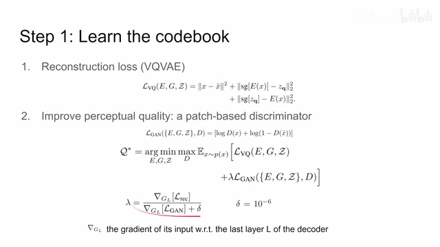
00:02:46–00:02:47 · 画面 01800:02:47–00:02:59 · 画面 019
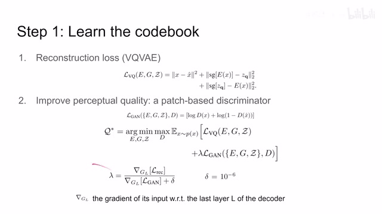
00:02:47–00:02:59 · 画面 01900:02:59–00:03:00 · 画面 020
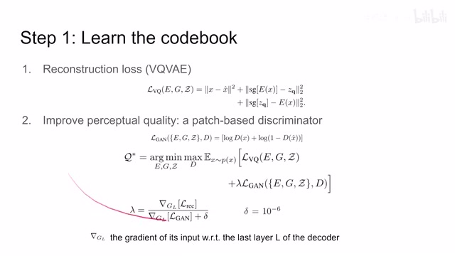
00:02:59–00:03:00 · 画面 02000:03:00–00:03:05 · 画面 021
00:03:00–00:03:05 · 画面 02100:03:05–00:04:50 · 画面 022
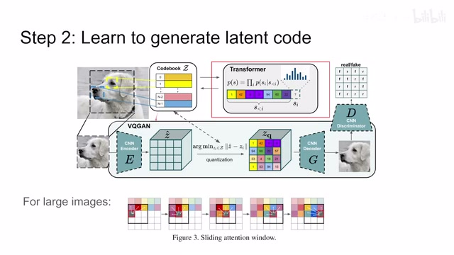
00:03:05–00:04:50 · 画面 022那这个 latent code 呢你想他就是一串序列吗这个序列呢记录了这个每个 patch 啊这个位置上他应该是使用哪一个码对吧然后呢放 decoder 里面去解码实际上因为我们这个码表是离散的就可以直接用这个 index 啊去做这个标记然后呢因为我们整个这个生成的问题是一个 auto regressive 也就是先有了第一个码然后根据第一个码生成第二个码再根据前两个码生成第三个码这样子不断的去生成这个 auto regressive 这样一个方法所以呢，你会一次一次的把我们这个前面的码送到我们 transformer 里面，你可以把它们理解成一种 condition，然后呢根据前面这 condition 啊，我们来预测说下一个码应该是哪一个码，相当于让我们的这个 transformer 去做一个这个多分类的，任何一个问题，那当然你说我如果想生成高清的图像对吧，应该怎么办呢
那高清的图像，我们这个 patch size 不变的情况下，我们就让这个码表这个序列让它变长一点就好了嘛，但是呢这个序列长呢就会带来另一个问题，就是 transformer 对吧，它是一个全局的这么一个 attention，你序列长的时候计算代价非常大，那怎么办呢，对于这个大型的这个图像高清的图像，作者呢把这个 attention 限制在一个窗口里面，然后呢去滑动这个窗口，这样子呢你 transformer 它的这个 sequence 它的长度呢就给限制住了同时呢他也能够保证一定的这个全局的信息在局部中的这么一个全局的信息，那么当然既然是基于这个 auto regressive 基于前置的这些 index 去预测下一个 index，我们完全可以在这个前置中增加更多的信息，人为的给他增加一些更多的 condition，让我们的网络呢做一个 condition 的输出，也就是给他一定的条件来去输出就是这个 condition synthesis
00:04:50–00:05:09 · 画面 023
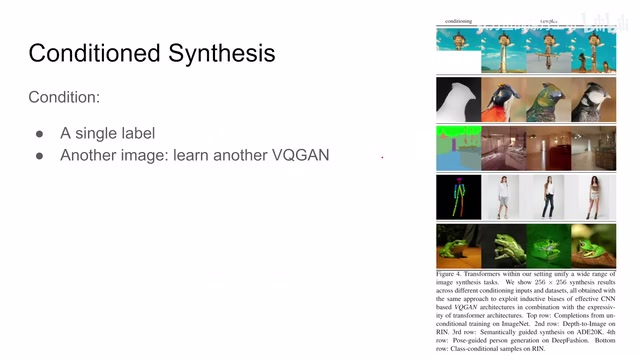
00:04:50–00:05:09 · 画面 023那当然你这 condition 也很自由了对吧，你可以是一个 label，比如说告诉他生成个猫生成个狗，还是说呢你是一整张图像，一张图像呢你就可以做这个 translation 啊，就是画风的迁移这些东西，那这个时候呢你就要更新你的码表或者说重新训练一个 VQGAN，那比如说这里你可以看到这个例子里面，我 latent code 只给到这啊，我先写到这，剩下的你们自己发挥吧对吧，啊自己发挥的各种各样的结果都有，那还有这个 image translation
00:05:09–00:05:10 · 画面 024
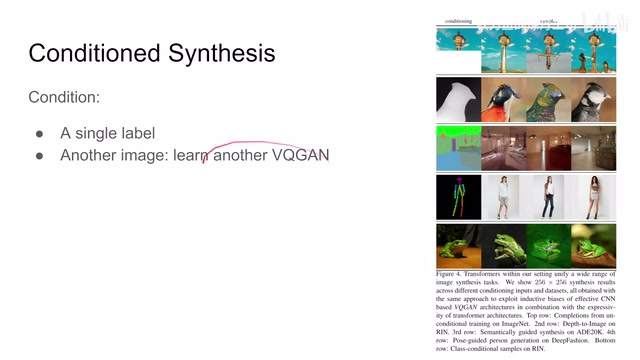
00:05:09–00:05:10 · 画面 02400:05:10–00:05:29 · 画面 025
00:05:10–00:05:29 · 画面 025啊这些东西等等等等，这样子呢让我们这个模型呢就变得非常自由了，那么当然这种设计呢也不是作者独创的，在之前呢我们有这个 PixelSNAIL 用这个 causal convolution 还有这个 self-attention 一起做的这么一个 auto regressive 的方法，那在本文呢就直接替换成 transformer，作者呢这里有一个简单的对比，这个是不同的数据集啊，不同的任务，具体的这个你可以看到这边的描述啊，那可以看到在这个相同的这个 train step
00:05:29–00:06:13 · 画面 026
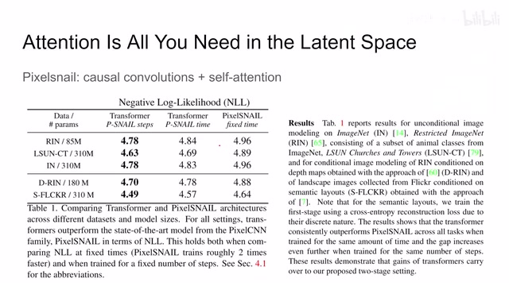
00:05:29–00:06:13 · 画面 026或者说是相同的这个时间，因为我们 transformer 比这个 PixelSNAIL 要慢很多，那本文的方法呢都取得了这个更好的结果，那么后面的作者有大量的这个实验的结果，它的补充材料里面有更多的样例，那非常推荐感兴趣的朋友呢去查看原文，好的，以上就是我对这篇文章一个快速的介绍，那么感谢您的收看，再见
00:06:13–00:06:13 · 画面 027
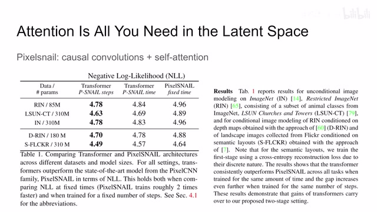
00:06:13–00:06:13 · 画面 027转写与来源说明 · 0 个自动复核提示
保留 14 个原始语音片段，0 个片段触发自动复核提示。提示仅用于定位可能的术语、重复或识别问题，不等于已确认错误。
讲解画面为源视频截图（640×360），不是可编辑 PPT 文件。全片按每秒 2 帧扫描内容变化，逐步展开页保留；连续动画保留代表画面。清晰度受源视频限制。
原视频：paper/合集_2026-10-16_内容生成/[论文速览]Taming Transformers for High-Resolution Image Synthesis[2012.09841].mp4
SHA-256：bbc7e96be1a889ed92c1e6edcd1ce62d89ff01c34a962b0f31d94c903be4e39d
全文按视频语音与画面制作。原论文可从上方链接下载；完整资料包保留全文、原始逐字稿、字幕和校对记录。